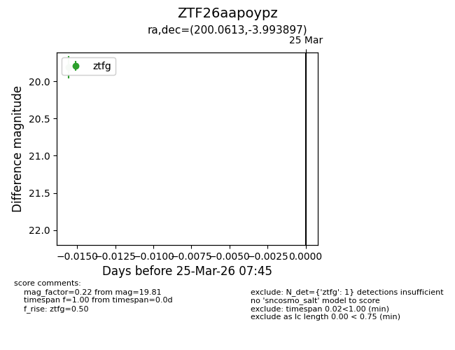
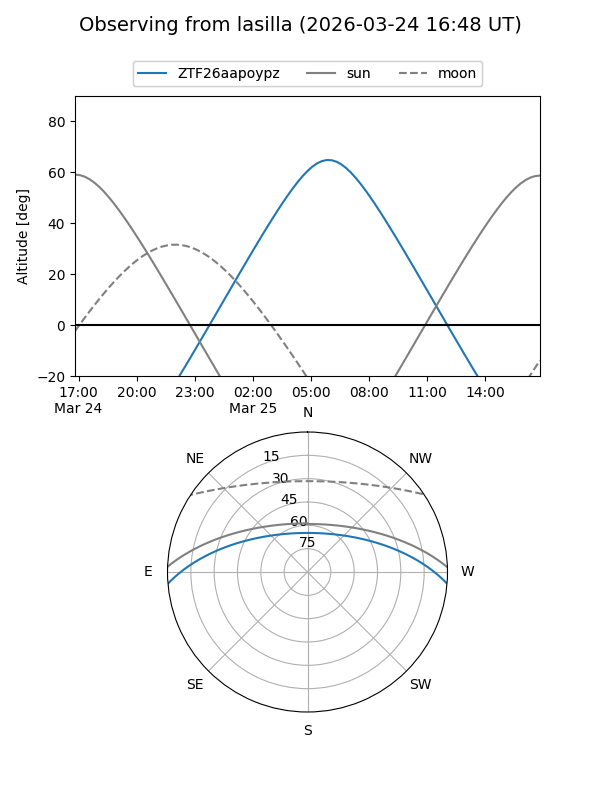
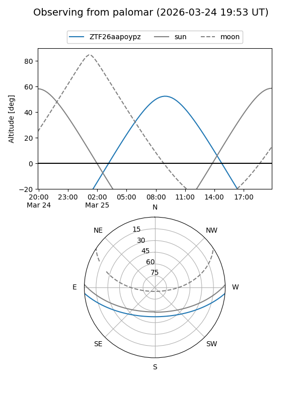

ZTF26aapoypz
Target ZTF26aapoypz at 2026-03-25 07:48
Aliases and brokers:
FINK: link
Lasair: link
ALeRCE: link
alt names
ZTF26aapoypz (ztf,fink_ztf)
Coordinates:
equatorial (ra, dec) = 200.0613,-3.99390
equatorial (HMS+DMS) = 13:20:14.72,-03:59:38.03
galactic (l, b) = (316.6254,+58.10990)
Flags:
Photometry:
last ztfg=19.81
1 ztfg detections
Lightcurve

Visibility


Additional plots